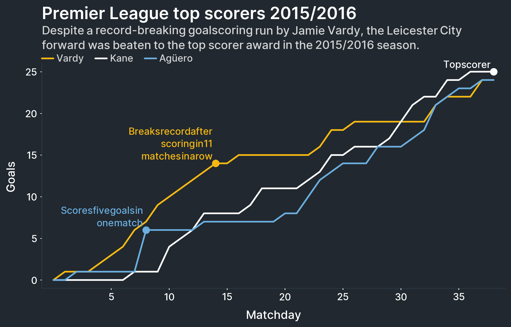

1. Getting started¶
There is one thing that is more important than anything else in Multiplex: the Drawable class.
All of Multiplex’s visualizations revolve around it.
Indeed, if you are using Multiplex, you can—and should—work only with Drawable class.
The basic process to draw Multiplex’s new visualizations under the hood is as follows:
Users create a
Drawableinstance. This is made up of the figure and, optionally, the axes. Users need only interact with theDrawableinstance.To draw a visualization, users call the appropriate function on the
Drawableinstance. These functions start withdraw_, for example,draw_time_series().The
Drawable, in turn, instantiates the visualization. Then, it calls thedraw()function and returns the drawn components.
To start working with a Drawable, create it from a normal plot:
import matplotlib.pyplot as plt
from multiplex import drawable
viz = drawable.Drawable(plt.figure(figsize=(10, 5)))
That code block would use matplotlib’s default plot. If you want to plot on a particular axes, or a subplot, you can create it as follows instead:
import matplotlib.pyplot as plt
from multiplex import drawable
figure, axes = plt.subplots(2, 1, figsize=(10, 10))
viz = drawable.Drawable(figure, axes[0])
To learn more about how Multiplex works, keep reading the documentation. If all you want is to get your hands dirty, take a look at Multiplex’s Jupyter Notebook examples. Happy visualizing!
Drawable¶
A Drawable is nothing more than a class that wraps a matplotlib figure and an axes.
All of the functions that you would call on a matplotlib axes, you can call on the Drawable.
If you call any function that belongs to a matplotlib axes, then matplotlib handles it as usual.
However, if you call a function that is new to Multiplex, such as a new visualization, then the library handles it.
To create a Drawable instance from a normal plot:
viz = drawable.Drawable(plt.figure(figsize=(10, 5)))
To create a Drawable instance from an axes, or a subplot:
figure, axes = plt.subplots(2, 1, figsize=(10, 10))
viz = drawable.Drawable(figure, axes[0])
Some important functionality that the Drawable class provides:
The
set_caption()function. This function sets a caption under the title so that readers immediately know what the visualization is about.The
savefig()andshow()functions. These functions mirror matplotlib’s savefig and show functions respectively. When you call these functions, theDrawablere-draws the visualization, making sure that the title, caption and legend do not overlap.The
annotate()function. You can call this function to add text to any plot. This function is useful to point to information that is not immediately obvious, or to draw your readers’ attention.
-
class
drawable.Drawable(figure, axes=None)¶ The
Drawableclass wraps a matplotlib figure and axes to provide additional functionality. If no axes is given, the default plot axes (plt.gca()) is used. TheDrawableclass can be used as a normal matplotlib.axes.Axes object with additional functionality. The axes functionality can be called on theDrawableclass. TheDrawableinstance re-routes method and attribute calls to the matplotlib.axes.Axes instance.- Variables
figure (
matplotlib.figure.Figure) – The figure that theDrawableclass wraps.axes (
matplotlib.axes.Axes) – The axes where the drawable will draw.caption (
Annotation) – The caption, displayed under the title.timeseries (None or
TimeSeries) – The time series object that is being used. When no visualization has been created, it is set to None. It is instantiated the first time a time series is drawn.bar100 (None or
Bar100) – The 100% bar chart visualization that is being used. When no visualization has been created, it is set to None. It is instantiated the first time a 100% bar chart is drawn.annotations (list of
Annotation) – The annotations in the visualization.
-
__init__(figure, axes=None)¶ Create the drawable with the figure.
- Parameters
figure (
matplotlib.figure.Figure) – The figure that theDrawableclass wraps. This is mainly used to get the figure renderer.axes (None or
matplotlib.axes.Axes) – The axes (or subplot) where to plot visualizations. If None is given, the plot’s main subplot is used instead.
-
set_caption(caption, alpha=0.8, lineheight=1.25, *args, **kwargs)¶ Add a caption to the subplot. The caption is added just beneath the title. The method re-draws the title to make space for the caption.
The caption is a
Annotationobject. Any arguments that the constructor accepts can be provided to this method.- Parameters
caption (str) – The caption to add to the axes.
alpha (float) – The opacity of the caption between 0 and 1.
lineheight (float) – The space between lines.
- Returns
The drawn caption.
- Return type
-
redraw()¶ Re-create the title, with the goal of leaving enough space to fit the caption and the legend. Afterwards, it redraws the legend.
-
savefig(*args, **kwargs)¶ A special function that calls the matplotlib.pyplot.savefig function. Before doing that, the function first redraws the drawable.
This function is very important when the title and caption are set before drawing the visualization. In these cases, it is possible that the legend or the plot labels cause the caption or title to overlap with the plot.
-
show(*args, **kwargs)¶ A special function that calls the matplotlib.pyplot.show function. Before doing that, the function first redraws the drawable.
This function is very important when the title and caption are set before drawing the visualization. In these cases, it is possible that the legend or the plot labels cause the caption or title to overlap with the plot.
-
__getattr__(name)¶ The magic function through which most of
Drawable’s functionality passes. This function receives any unknown call and passes it on to theDrawable’s matplotlib.axes.Axes. This function automatically checks whether the call is referencing a function or a variable.- Parameters
name (str) – The name of the attribute.
- Returns
The function applied on the axes.
- Return type
function
-
annotate(text, x, y, marker=None, pad=0.01, *args, **kwargs)¶ Add a text annotation to the plot. This function can be used to draw attention to certain or describe the visualization on the plot itself.
Any additional arguments and keyword arguments are passed on to the
Annotation’sdraw()function. For example, the va can be provided to specify the text’s vertical alignment, andthe align parameter can be used to specify the text’s alignment.- Parameters
text (str) – The text of the annotation to draw.
x (tuple) – A tuple containing the start and end x-coordinates of the annotation.
y (float) – The y-coordinate of the annotation.
marker (None or dict) – The marker style. If it is not given, no marker is drawn.
pad (float) – The amount of padding applied to the annotation.
- Returns
The drawn annotation.
- Return type
-
draw_bar_100(*args, **kwargs)¶ Draw a bar chart that stacks up to 100% on this
Drawable. The arguments and keyword arguments are those supported by theBar100’sdraw()method.- Returns
A list of drawn bars.
- Return type
list of
matplotlib.patches.Rectangle
-
draw_graph(*args, **kwargs)¶ Draw a graph visualization on this
Drawable. The arguments and keyword arguments are those supported by theGraph’sdraw()method.- Returns
A tuple containing the list of drawn nodes, the rendered node names, edges, and the rendered edge names.
- Return type
tuple
-
draw_text_annotation(*args, **kwargs)¶ Draw a text annotation visualization on this
Drawable. The arguments and keyword arguments are those supported by theTextAnnotation’sdraw()method.- Returns
The drawn text annotation’s lines. Each line is made up of tuples of lists. The first list in each tuple is the list of legend labels. The second list in each tuple is the list of actual tokens.
- Return type
list of tuple
-
draw_time_series(*args, **kwargs)¶ Draw a time series visualization on this
Drawable. The arguments and keyword arguments are those supported by theTimeSeries’draw()method.- Returns
A tuple made up of the drawn plot and label.
- Return type
tuple
-
__weakref__¶ list of weak references to the object (if defined)
Visualizations¶
Although it is not likely that you will need them, Multiplex also contains visualization types. These classes can help you get started creating new types of visualizations.
Basic Visualization¶
All visualizations must have, at least, a Drawable.
They must also implement the draw function.
Any other functionality is up to the visualization type.
The goal of visualizations is not to run away with the data. Their purpose is to structure the data and apply only the styling that is absolutely required. They should allow the user to style all aspects of the visualization.
In short, visualization implementations are largely concerned with the structure, not the style.
-
class
visualization.Visualization(drawable, *args, **kwargs)¶ All visualizations contain at least a
Drawable. Furthermore, all classes that inherit theVisualizationclass also need to implement functionality to draw a visualization. This is implemented in thedraw()function.-
__init__(drawable, *args, **kwargs)¶ Create the visualization with a drawable.
-
abstract
draw(*args, **kwargs)¶ The draw method is the central method, used to create the visualization on this class’
Drawableinstance. The purpose of this function is two-fold:Structure the data and apply the bare minimum styling to the visualization, and
Allow the user to style the created visualization’s components.
Therefore the drawing function should mainly be concerned with the layout.
At the end, the function should return the drawn component. If the function draws multiple components, it can return them as a tuple.
-
__weakref__¶ list of weak references to the object (if defined)
-
Labelled Visualization¶
A labelled visualization is a visualization that support labelling.
Whereas labels are normal TextAnnotation instances, this visualization type automatically moves annotations so that they do not overlap.
All functionality goes through the draw_label() function.
-
class
labelled.LabelledVisualization(*args, **kwargs)¶ The labelled visualization adds functionality to visualizations that use labels. Labels are normal
TextAnnotation, which the class stores as instance variables. This class adds functionality to distribute overlapping labels.- Variables
labels (list of
TextAnnotation) – The labels in the visualizations. This list is used to ensure that labels do not overlap.
-
__init__(*args, **kwargs)¶ Create the labelled visualization by initializing the list of labels.
-
abstract
draw(*args, **kwargs)¶ The draw method is the central method, used to create the visualization. The purpose of this function is two-fold:
Structure the data and apply the bare minimum styling to the visualization, and
Allow the user to style the created visualization’s components.
Therefore the drawing function should mainly be concerned with the layout.
At the end, the function should return the drawn component. If the function draws multiple components, it can return them as a tuple.
-
draw_label(label, x, y, va='center', max_iterations=10, *args, **kwargs)¶ Draw a label at the end of the line.
Any additional arguments and keyword arguments are passed on to the
text.annotation.Annotation.draw()function.- Parameters
label (str) – The label to draw.
x (float) – The x-position of the annotation. The function expects either a float or a tuple. If a float is given, it is taken to be the start x-position of the annotation. The end x-position is taken from the axes limit. If a tuple is given, the first two values are the start and end x-position of the annotation.
y (float) – The y-position of the last point on the line.
va (str) – The vertical alignment, can be one of top, center or bottom. If the vertical alignment is top, the annotation grows down. If the vertical alignment is center, the annotation is centered around the given y-coordinate. If the vertical alignment is bottom, the annotation grows up.
max_iterations (int) – The maximum number of iterations to spend arranging the labels.
- Returns
The drawn label.
- Return type
-
class
labelled.DummyLabelledVisualization(*args, **kwargs)¶ The dummy labelled visualization is a simple class used only for testing. Its implementation is based on the labelled visualization, but it has an empty
draw()function.- Variables
labels (list of
TextAnnotation) – The labels in the visualizations. This list is used to ensure that labels do not overlap.
-
draw(*args, **kwargs)¶ The dummy visualization draws nothing, and therefore it returns nothing.
- Returns
Nothing.
- Return type
None
Legend¶
Legends are a common sight in visualizations, and a helpful one at that. Multiplex places legends just beneath the caption and above the plot. That way, readers can understand how to interpret the visualization before seeing it.
Apart from drawing the annotations, the legend aligns and organizes them on different lines.
-
class
legend.Legend(drawable)¶ The legend is made up of tuples: a visual element and a short label describing what they represent. The legend class stores these and the
Drawableas instance variables.All of the drawn legend annotations go through the
draw()decorator. This function first draws the visual part of the annotation. Then, it draws the label next to it. This function is also responsible to lay out the legend annotations, creating new lines when necessary.- Variables
-
__init__(drawable)¶ Create the legend.
-
draw()¶ This function is the most important one in the
Legendclass. This decorator wraps all of the legend annotations and draws them in three steps:First, it draws the visual part of the legend annotation.
Second, it draws the textual label next to the visual part.
Third, it adds a new line to the legend if need be.
- Parameters
f (function) – The function to wrap.
- Returns
The wrapped function.
- Return type
function
-
redraw()¶ Redraw the legend. This function only has an effect when the x-axis label and ticks are at the top, instead of at the bottom. In this case, this function moves the legend up to make room for the label and ticks.
-
draw_annotation(label, x, y, va='bottom', *args, **kwargs)¶ Draw a text annotation. This function is called by the
draw()function after drawing the visual part of the legend annotation.The text annotation is based on the
Annotationclass. The arguments and keyword arguments are passed on to thedraw()function.- Parameters
label (str) – The text of the legend label.
x (float) – The starting x-coordinate of the annotation.
y (float) – The y-coordinate of the annotation.
va (str) – The vertical alignment, can be one of top, center or bottom. If the vertical alignment is top, the given y-coordinate becomes the highest point of the annotation. If the vertical alignment is center, the given y-coordinate becomes the center point of the annotation. If the vertical alignment is bottom, the given y-coordinate becomes the lowest point of the annotation.
- Returns
The drawn annotation.
- Return type
-
draw_text_only(self, *args, **kwargs)¶ Draw nothing as the visual part of the annotation. This is used for text-based annotations that require no visual annotation.
- Returns
None
- Return type
None
-
draw_arrow(self, offset, y=1, linespacing=1, *args, **kwargs)¶ Draw an arrow visual annotation. Any additional arguments and keyword arguments are provided to the matplotlib.text.Annotation class.
- Parameters
offset (float) – The x-offset where to draw the annotation.
y (float) – The y-position of the annotation.
linespacing (float) – The linespacing of the accompanying text annotation.
- Returns
The drawn arrow.
- Return type
matplotlib.text.annotation
-
draw_line(self, offset, y=1, linespacing=1, horizontal=True, *args, **kwargs)¶ Draw a line visual annotation. Any additional arguments and keyword arguments are provided to the matplotlib.lines.Line2D class.
- Parameters
offset (float) – The x-offset where to draw the annotation.
y (float) – The y-position of the annotation.
linespacing (float) – The linespacing of the accompanying text annotation.
horizontal (bool) – A boolean indicating whether the line should be horizontal.
- Returns
The drawn line.
- Return type
matplotlib.lines.Line2D
-
draw_point(self, offset, y=1, linespacing=1, *args, **kwargs)¶ Draw a scatter point visual annotation. Any additional arguments and keyword arguments are provided to the matplotlib.pyplot.scatter class.
- Parameters
offset (float) – The x-offset where to draw the annotation.
y (float) – The y-position of the annotation.
linespacing (float) – The linespacing of the accompanying text annotation.
- Returns
The drawn point.
- Return type
matplotlib.collections.PathCollection
-
get_virtual_bb(transform=None)¶ Get the bounding box of the entire annotation. This is called a virtual bounding box because it is not a real bounding box. Rather, it is the smallest rectangular bounding box that covers all of the bounding boxes of the legend.
- Parameters
transform (None or
matplotlib.transforms.TransformNode) – The bounding box transformation. If None is given, the data transformation is used.- Returns
The bounding box of the legend. This bounding box covers all of the annotations in the legend.
- Return type
matplotlib.transforms.Bbox
-
__weakref__¶ list of weak references to the object (if defined)